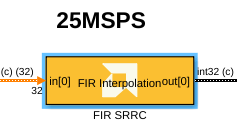
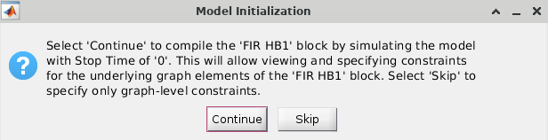
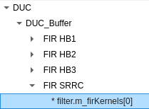
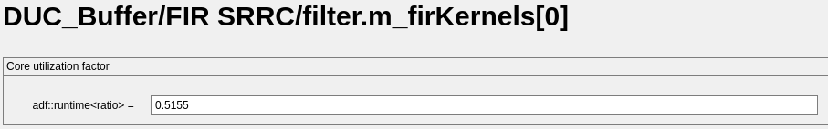
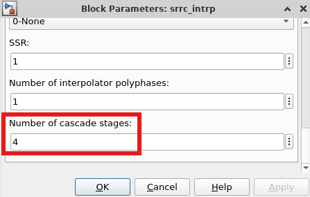

This example demonstrates a Digital Upconversion (DUC) algorithm implemented on AI Engine (AIE) devices.
See also the DUC implemented on Programmable Logic.
The DUC design consists of multi-stage finite impulse rate (FIR) filters, a direct digital synthesizer (DDS) and a mixer.
The DUC specification is as follows:
The example model compares a Simulink implementation of the DUC with two AI Engine implementations, one using Buffer interfaces between kernels, the other using Stream interfaces.

The input to all 3 designs is a 1 MHz complex sinusoid with a sample rate of 25 MSPS.

In the reference design, the 4 filter stages are implemented with Simulink's FIR Interpolation block.

The Gain blocks between each stage control bit growth and ensure that the input to each filter is 32 bits.
The AI Engine design is implemented using FIR interpolator and mixer blocks from the AI Engine DSP library.

Note that the AI Engine design has a single sample time in Simulink, but the signal dimensions increase as data flows through the filters (from 32 samples up to 512 samples, up to each stage). This effectively models the filter's interpolation; more data is being transferred in the same time period.
The PLIO blocks indicate that 64 bits are transferred on each PL clock cycle. With a PL clock frequency of 500 MHz and int32 data type, this yields a maximum data rate of 1 GSPS. This easily satisfies the desired output sample rate of 400 MSPS.
Two versions of the AI Engine design are provided. They are identical, except one uses DSP library blocks with streaming interfaces, while the other uses DSP library blocks with buffer interfaces.
The DUC upconverts the 1 MHz complex sinusoid with a sample rate of 25 MSPS to a 75 MHz signal with a sample rate of 400 MSPS. The buffer and streaming implementations are compared to the Simulink golden reference model.

Both the buffer and streaming implementation are able to achieve the desired throughput of 400 MSPS.
To run cycle-approximate AIE simulation and display the calculated throughput, use the Analyze tab in the Vitis Model Composer Hub block.

The latency of the AI Engine design can be viewed in Vitis Model Composer. Select the AI Engine's input and output (use Shift+Click to select multiple signals), right-click and select Compute Latency.

Focusing on the Last Latency (indicating steady state operation of the DUC), the streaming implementation has lower latency than the buffer implementation.

The buffer and streaming implementations differ in resource utilization. The differences are apparent in the graph view and resource utilization reports, which can be viewed in Vitis Analyzer. To open Vitis Analyzer from Vitis Model Composer, use the Open Vitis Analyzer button on the Analyze tab of the Vitis Model Composer Hub block.
According to the Vitis Analyzer, the buffer implementation of the DUC uses 5 AI Engine tiles.

The Graph tab provides a graphical representation of the AI Engine kernels and how they are connected.

The Kernels subtab lists each kernel, including its runtime ratio and which AI Engine tile to which it is assigned.

Runtime ratio is a parameter that describes how much of a tile's computational power that a kernel will use. A kernel with runtime ratio of 1.0 will use all of the tile's computational power, leaving no room for other kernels. To save space in the AI Engine array, you can combine kernels with low runtime ratios into a single AIE tile.
In the kernel list above, FIR_HB1 and FIR_HB2 have low runtime ratios that together do not add up to 1.0. As a result, the AI Engine Compiler has placed both kernels onto the same tile (24,1). The runtime ratio of each kernel can be specified as a constraint to help the compiler place the design optimally.
To specify the kernels' runtime ratio in Vitis Model Composer:
FIR_SRRC.

filter.m_firKernels[0] under FIR SRRC.
adf::runtime<ratio>.
This implementation has 4 cascade stages on the 1st interpolation filter and 2 cascade stages on the 2nd filter.


The number of cascade stages is specified on each filter block:

This cascaded, streaming implementation of the DUC uses 13 AI Engine tiles. As mentioned above, the increased resource utilization comes with decreased latency.

The AI Engine DSP Library, accessible in Vitis Model Composer, can be used to quickly experiment with different architectures for various signal processing algorithms, including Digital Upconversion (DUC).
Copyright (c) 2026 Advanced Micro Devices, Inc.